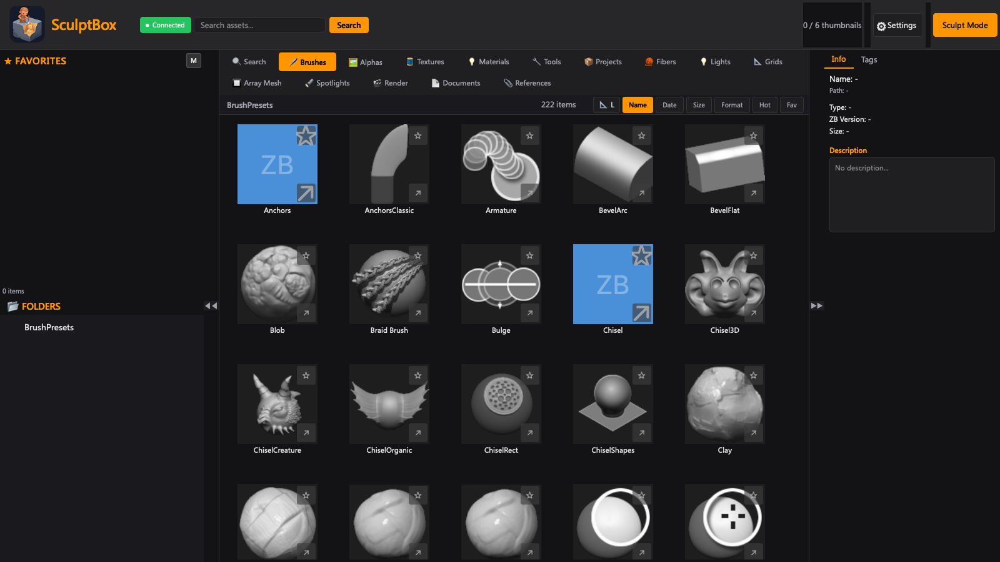

三文字打つだけで目的のブラシが出ます。以前は 10 分スクロールしていました。
佐
V1.0 から
数千のブラシを管理、ミリ秒で検索。
ZBrush に即座に送信 · 4ヶ国語 · 無料
SculptBox は macOS / Windows 向けの ZBrush ブラシ管理ツールです。ZBrush を起動せずに、ブラシライブラリの整理・検索・タグ付け・プレビューができます。
01 — ブラシライブラリ
SculptBox はライブラリ全体を索引し、すべてのサムネイルをネイティブに解析します — ZBrush を起動していなくても。キーワードを入力すればミリ秒で絞り込めます。
02 — 彫刻モード
SculptBox の Mini ウィンドウは ZBrush の「上」ではなく「隣」に置かれます。3 段階の高さ、ドラッグで幅変更、位置も記憶 — 彫刻中にビューポートが覆われることはありません。


03 — ZBrush へ送信
右クリックで送信。ローカルの IPC ブリッジがブラシをリアルタイムで ZBrush に渡します — 1 本でも一括でも。300 本の上限はありません。


数千のブラシをミリ秒で応答。完全なサムネイルプレビューで、ファイル名からの推測が不要になります。

ZBrush の隣に置けるコンパクトなフローティングウィンドウ。ビューポートを覆わずにブラシを探して送れます。3 段階の高さ、ドラッグで幅変更、常に手前に表示。

すべてのブラシが実際のサムネイルを表示。ネイティブ ZBP 解析で 1 本 50ms。S/M/L の 3 サイズで作業スタイルに合わせられます。

キーワード入力で即時フィルタ。10 個の自動タグ（Sculpting、Curve、Insert、Utility）とカスタムタグ。

ファイル名から自動タグ付け + 手動追加。クリックで絞り込み、セッションをまたいで保持されます。

よく使うブラシに星を付けて登録。ワンクリックで呼び出せ、常にライブラリの先頭に表示されます。

サムネイルを S/M/L の 3 段階で切替。作業スタイルに合わせて表示を調整できます。
右クリックで送信、IPC ブリッジでリアルタイムに反映。複数ブラシの一括送信で 300 本の上限を突破します。

一括送信・一括書き出し・一括タグ付け。進捗表示つき。ブリッジもワンクリックで配置できます。

ヘルスチェックパネル。ZBrush の状態、ブリッジ、IPC の準備状況を一目で確認。インストールは 1 分です。

English · 中文 · 日本語 · 한국어。設定からいつでも切り替えられます。

スキャン対象、ZBrush のパス、キャッシュ、言語、更新、情報をまとめた設定パネル。
カスタムブラシは新しいユーザーディレクトリへ移動しました。現在の場所と復旧方法をまとめています。
ベータの声
ベータテストでのフィードバックをまとめたものです。氏名・アイコンは例示で、記載の機能はすべて正式版に実装されています。
よくある質問
はい。macOS では無料でダウンロード・利用できます。Windows 版もまもなく公開予定です。
使えます。サムネイルは .ZBP から直接解析するため、閲覧・検索に ZBrush の起動もインストールも不要です。
いいえ。ブラシフォルダは読み取り専用として扱い、元の .ZBP / .ZBR を移動・改名・編集することはありません。
通信は任意のアップデート確認のみで、送信するのはリクエスト自体だけです。Settings → Update でオフにできます。ブラシライブラリやファイル名が外部に出ることはありません。
未署名アプリの警告で、ダウンロードの破損ではありません。sudo xattr -rd com.apple.quarantine /Applications/SculptBox.app を実行してください — 詳細はダウンロードページへ。